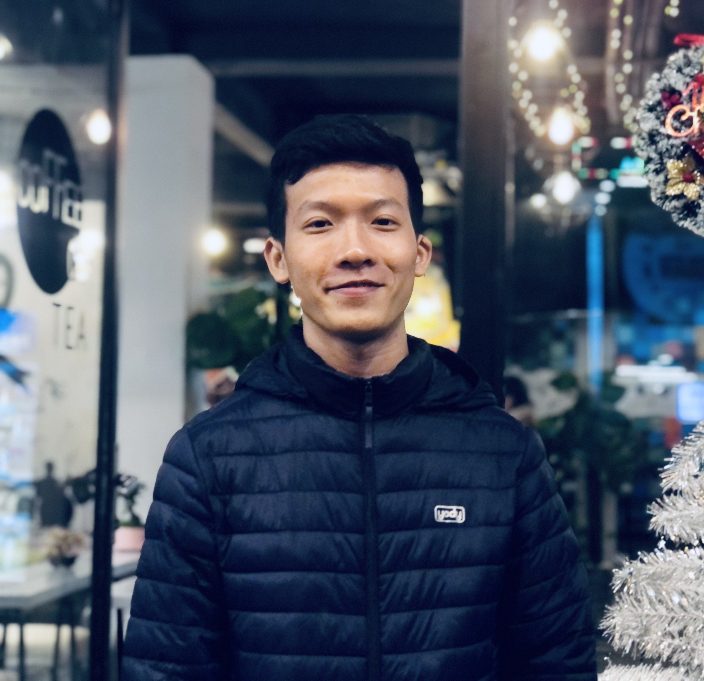

NGUYỄN TRUNG NHÂN
Phone: (+84) 783 148 257
Email: nguyentrungnhan2107@gmail.com
https://www.linkedin.com/in/nhangfast
Danang, Vietnam

Having a passion for technology in general and IT in particular, I really want to learn more so that I can become a software engineer. I want to improve my logical thinking, ability to proactively solve problems, and especially be able to apply what I have learned to create quality software to contribute their values to Vietnam and other countries.
Education
University of Science and Technology of Danang
- Major: Electronics & Communication Engineering (Structured by University of Washington - USA)
- Minored in Communication of International Programs
- GPA: 3.11/4
Professional Training
DataHouse Vietnam's Open Day: Coding For Survival
- Gaining skill-sets to deal with rush deadlines
- Experiences on real projects
- Growth mindset, fixed mindset and especially the office tour
Honors and awards
IELTS 5.5 Overall Certificate (Mar 2021 - Mar 2023)